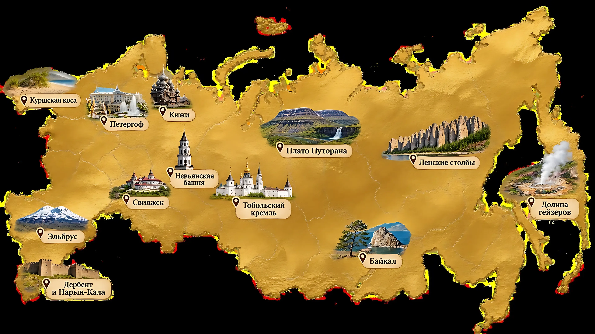

🌲 Природные сокровища России
Байкал, Ленские столбы, Эльбрус, плато Путорана, Долина гейзеров и Куршская коса.
Файл: assets/video/nature.mp4
Перед вами — драгоценная коллекция природных чудес и архитектурных шедевров. Каждое сокровище хранит силу земли, красоту времени и мастерство человека.
Наведите курсор или нажмите на светящуюся точку, чтобы открыть объект.

Открывайте объекты, проходите квиз и получайте звания знатока России.
Видео будут добавлены на финальном этапе. Сейчас выставку украшают фотографии и интерактивные разделы.
Байкал, Ленские столбы, Эльбрус, плато Путорана, Долина гейзеров и Куршская коса.
Кижи, Невьянская башня, Свияжск, Дербент, Тобольский кремль и Петергоф.
Открывайте карточки, рассматривайте изображения, читайте историю и собирайте свою коллекцию впечатлений.
Вы открыли сокровищ: 0 из 12
Проверьте, какие объекты запомнились лучше всего. Сертификат доступен после результата 10 из 12 и выше.
Настоящий сертификат подтверждает, что
Знаток сокровищ России
успешно прошёл интерактивную выставку
«Открой Россию: Сокровища земли русской»
Результат квиза: 12 из 12